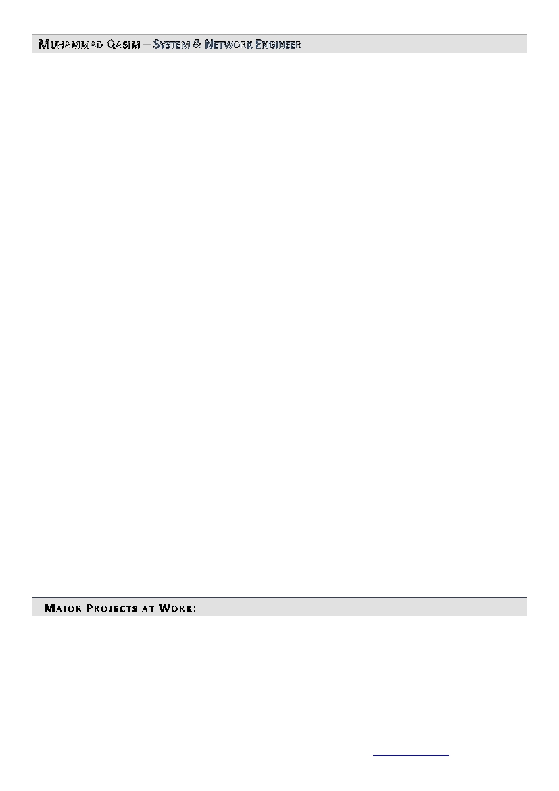
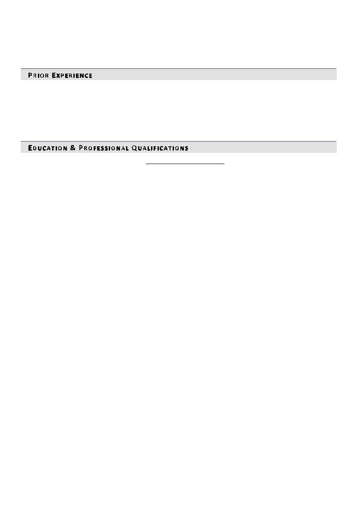

S YSTEM & N ETWORK E NGINEER
Multifaceted, driven and highly motivated information technology professional with seven years of
experience in system and network engineering, technical support, and software installation.
Responsible for the design, testing, evaluation, implementation, support, management, and deployment of security systems
and network devices used to safeguard the organization's information assets, debugging of security, routing and
management of network schemes to meet high level of reliability required to support critical computer applications. Plan
and develop security measures to safeguard information against accidental or unauthorized modification, destruction, or
disclosure. Work with management and other personnel, as needed, to identify security needs. Develop and define security
standards which incorporate practices, processes, and products for the enterprise in support of the corporate security
policies. Proven success in performing system monitoring, verifying integrity of all hardware, server resources, systems, and
key processes, revising system and application logs, and verifying completion of scheduled jobs. Performance driven and
focused on achieving corporate objectives with reputation for exceeding expectations and delivering superior results in
challenging environments. Areas of expertise includes…
Systems and Network Engineering • Support Process Improvement • Process Analysis • Troubleshooting & Issue
Resolution • Project Planning & Supervision • Risk Assessment & Management • Software Development Lifecycle •
Team Building & Staff Leadership • Problem Identification & Resolution
K EY A CCOMPLISHMENTS
Focused on managing and maintaining company network and security. Responsibilities will be to cover such as configuring
and troubleshooting routing, switching, firewalls and network access control. Working closely with our team and customers
to ensure that a high level of service is provided, and value added at every customer engagement. Deploy docker based
infrastructure and Docker based services, Kubernetes & Docker Swarm and facilitate current systems, programs, and
equipment to deliver operational integrity, security, and disaster recovery maintenance. Steered installation, deployment,
and configuration of Linux Servers and directed production servers’ health, load average, storage, applications status, and
Databases Backups. Delivered senior-level technical consultations and support to field engineering and system integration
& testing departments on all IT and networking issues.
LINUX:
Installing, Configuring OpenStack Cloud, Linux Server, making RedHat High-Availability clusters (HA) and installing using
Essential linux Tools, File Management Tools, Managing Users and Groups. Connecting to an LDAP Server, managing
file, folder permissions, Configuring Networking, Managing Processes, Software and Working with Virtual Machines.
Scheduling tasks with Cron job, and Configuring Logging, Run levels, Managing physical partitions (PV, VG and LVM).
Managing, updating new Kernel, Apache (http, https, wsgi, virtual hosting) Services and managing SELinux, Configuring
Firewall, FTP, NFS, NTP, SMB, VNC Services.
Configuring a DHCP, DNS, require key authentication with SSH, Local Security, setting up a host-based firewall, Rich
Rules, Zones and Custom Rules, to Implement Packet Filtering and Configure Network Address Translation (NAT, PAT),
ACL, IPtables, SELinux security layer, Mariadb, Postfix email server.
User Administration, Modifying and deleting user accounts, Password aging, Group administration, Managing suid and
sgid.
Deploy and manage KVM virtual machines, Network teaming and bridging, ISCSI target and initiator, Static Routing on
server level, Produce and Deliver Reports on System Utilization (Processor, Memory, Disk, and Network).
Installing configuring NGINX for web serving, reverse proxying, advanced load balancing, caching, and load balancing of
public traffic and also making NGINX as a streaming server for HLS RTMP and VODs stream. Also integrate FFMpeg with
NGINX for making multi bitrate of LIVE and VODs and as well DVR option on Live stream for rewind video.
VMWARE:
Installation of ESXi, VCenter 6.0 and Create and update network Standard Virtual Switches.

M UHAMMAD Q ASIM – S YSTEM & N ETWORK E NGINEER
P AGE T WO
Create Virtual Machine, Cloning, Templates and performs technical analysis, installation, maintenance and
modification of operating system software. Define, connect to and browse NFS file shares from AD to VSphare
for installing VMs.
Authenticate vCenter with Active directory and add AD users to access vCenter with limited access. Create,
update and deploy VMs using template, snapshort and cloning.
Work with virtual disks. Hot add a RAM, CPU and secondary virtual disk. Grow a Linux system disk and increase
its partitions without the need for 3rd party tools.
Work with vCenter permissions. Use and customize Roles, Create, update Network Standard vSwitches. Use NIC
Teams for performance and redundancy.
VM migration including Cold Migration, Storage Migration and VMotion. Automated VM resource load balancing
with DRS clusters. Use HA clusters to minimize VM down time due to server failures.
Configure a Fault Tolerant VM. Simulate a ESXi host failure to ensure no VM down time. Backup and restore VMs
using VMware Replication. Set up VMware Update Manager to patch/update ESXi hosts. vCenter alarms for
monitoring key infrastructure objects. Send SNMP traps to a trap receiver on high VM resource consumption.
Enable and test VMware Storage I/O control to implement share based disk I/O scheduling.
Performing backups, troubleshooting and problem resolution for servers associated with a VMware virtual
infrastructure. Troubleshoots and resolves problems and monitors system performance while simultaneously
support staff engaged in similar efforts.
NETWORK:
Hands-on on venders network devices like Juniper SRX series, Cisco ASA 5510 & 5540, Layer 2 and 3 devices,
Mikrotik and PFsense. Big F5 load balancer and management of HP SAN Storage.
Protocol known as (BGP, OSPF, EIGRP, IGRP, RIP, DNS, SSH, FTP, SMTP, HTTP/HTTPS, SSL, TELNET, RIP, RIP2,
EIGRP, VLAN, Trunk, Spanning Tree, HSRP, VRRP, L2VPN, L3VPN, PPP, DHCP) Implemented SNMP on devices to
allow for network management.
Design, test, implement, and support network infrastructure, define the network architectural standard
processes and procedures, integrate data center networks with other sister and partner companies using IPSec
VPN, policies and route base VPN.
Project planning and designing scalable network infrastructure solutions to meet business requirements for a
reliable network (includes detailing current and future requirements, planning analysis, project design, cost and
personnel resource estimation for project implementation)
Assist in developing business continuity and disaster recovery plans for data center networking components,
produce, update process and configuration documentation and network diagrams
Functioned in close collaboration with equipment vendors and workers to install and relocate specifying spots
and improve formulation of processes, while assuring message Network administration.
Successfully maintained organization's effectiveness and efficiency by designing, delivering, and facilitating
strategic plans to execute information technologies.
M AJOR P ROJECTS AT W ORK :
Goonj:
A live streaming app for TV channels and VODs streaming. Having other features like chat, weather and YouTube
content for kids. All the infrastructure like streaming and databases servers, VMware, f5 load balancer, storage,
encoder, decoders etc are hosted in our own data-center for this project.
ZedFlix:
A live streaming app and web for TV channels and VODs streaming. Having other features like chat, weather and
YouTube content for kids. All the infrastructure like streaming and databases servers, storage, encoder, decoders
etc are hosted in our own data-center.

Molana Tariq Jamil:
Official Mobile Application of the respected Tariq Jamil also known as Molana Tariq Jameel. All updates of
Maulana Tariq Jameel Bayan, Speeches, Travels and Whereabouts will be available in this Tariq Jameel Official
Mobile Application.
P RIOR E XPERIENCE
ZARYANSGROUP Islamabad, Pakistan | Feb 2018 – Present
DIGITAL MEDIA DISTRIBUTION MAX Islamabad, Pakistan | Jul 2016 – Jan 2018
U-MICROFINANCE BANK LIMITED Islamabad, Pakistan | Nov 2015 – Jul 2016
ECONCEPTIONS Islamabad, Pakistan | Jul 2013 – Nov 2015
SYSTEM ADMINISTRATOR | Dawn Bread, Rawalpindi | Jan 2013 – July 2013
E DUCATION & P ROFESSIONAL Q UALIFICATIONS
Bachelor of Science, Computer Science, Islamia University, Bahawalpur
Professional Certification: RHCSA, RHCE, MCITP, CCNA
Professional Trainings: CCNP, JNCIA
Professional Affiliations: Affiliated with CisCom (http://ciscom.pk/) a training institute